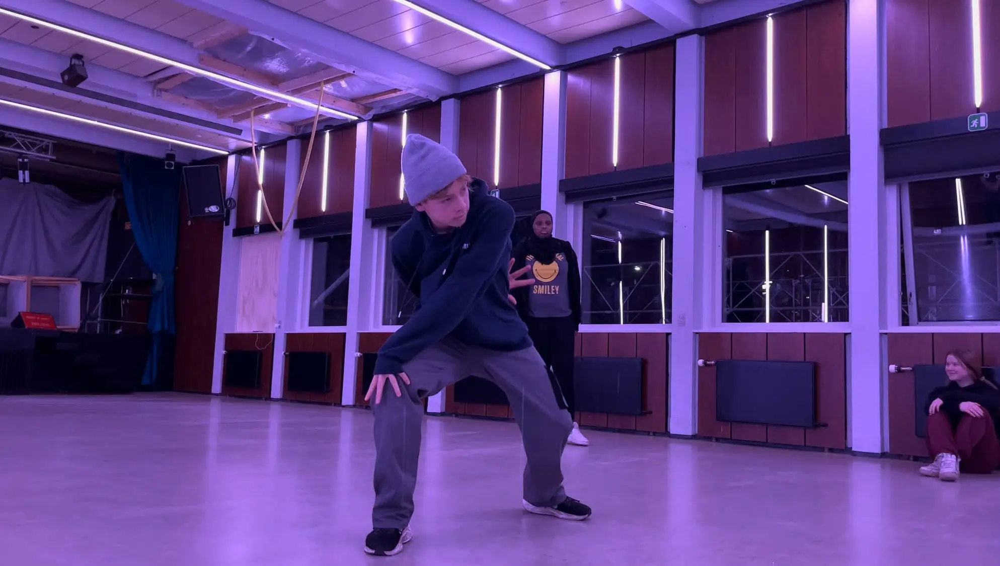
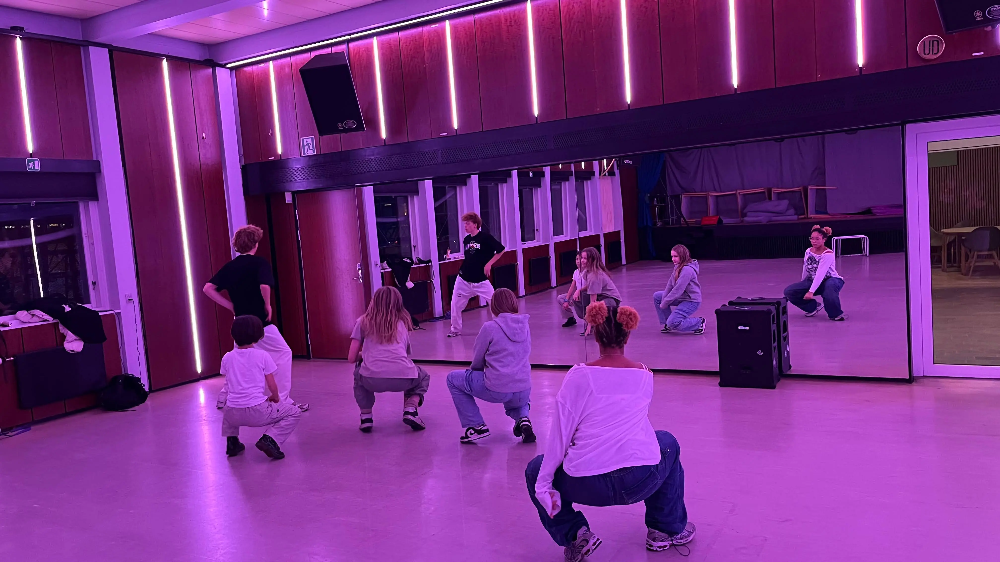
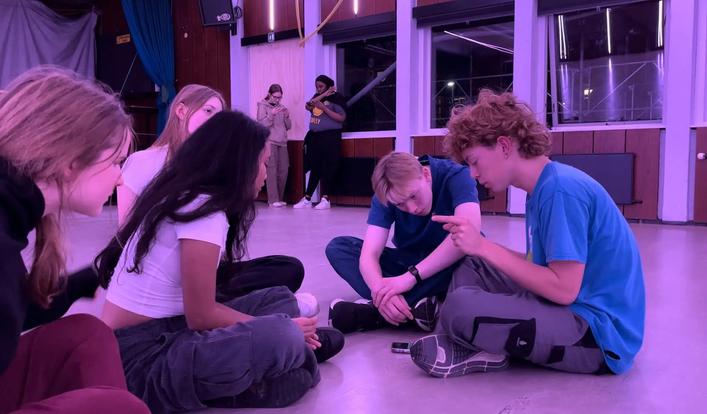
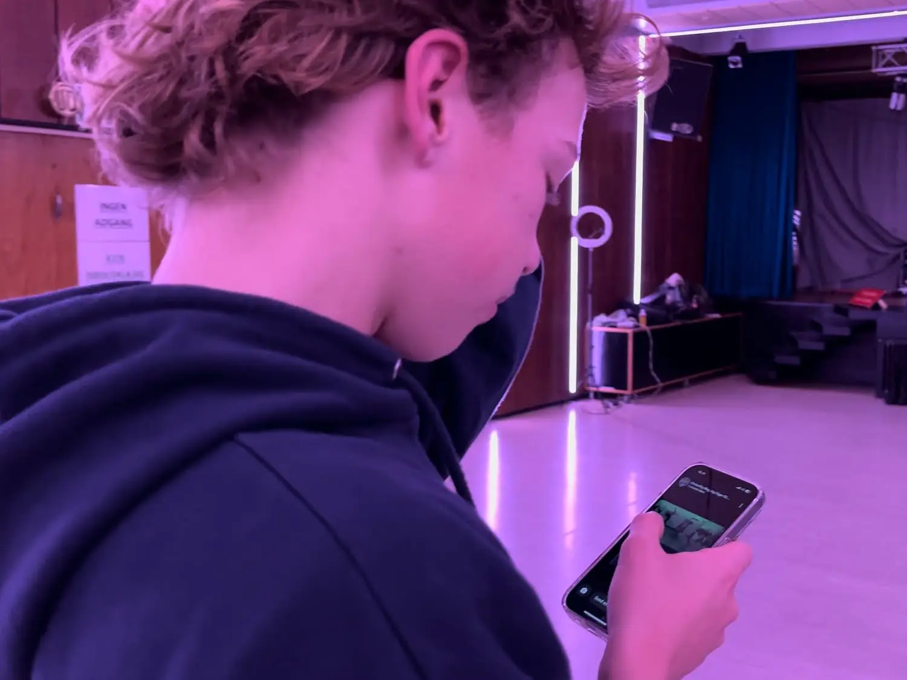
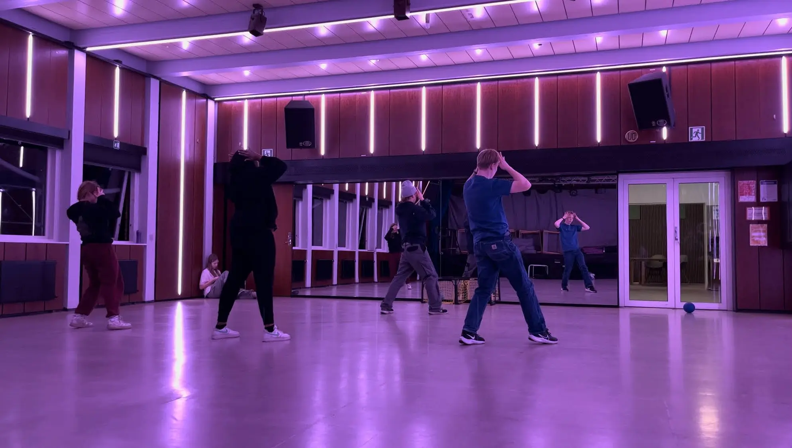

Person med en Passion
Dans
Nikolaj Kaaber Pors
På denne hjemmeside kan du se et lille interview, hvor vi spørger indtil hvorfor Nikolaj er så glad for at danse m.m.
Klik på knappen nedenunder for at tage direkte derhen.
Interview




